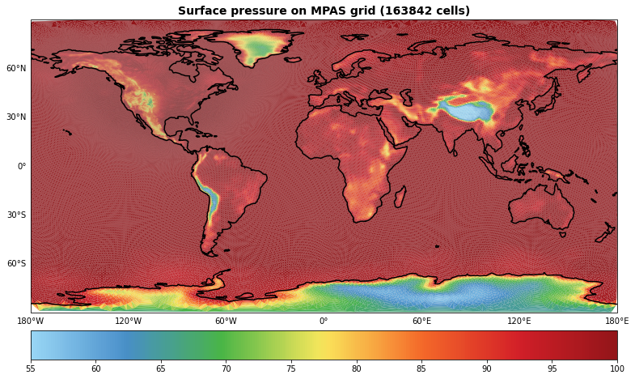

Table of Contents
1 Plot of Surface Pressure on MPAS grid
1.1 Get Data
1.2 Read Data from MPAS Grid
1.3 Convert to degrees from radians
1.4 Global tripcolor plot
Plot of Surface Pressure on MPAS grid¶
[1]:
%matplotlib inline
import xarray as xr
import numpy as np
import cartopy.crs as ccrs
import matplotlib.tri as tri
import matplotlib.pyplot as plt
from cartopy.mpl.gridliner import LONGITUDE_FORMATTER, LATITUDE_FORMATTER
Get Data¶
[2]:
from ngallery_utils import DATASETS
DATASETS.registry_files
[2]:
['thetao_Omon_historical_GISS-E2-1-G_r1i1p1f1_gn_185001-185512.nc',
'woa2013v2-O2-thermocline-ann.nc',
'NOAA_NCDC_ERSST_v3b_SST.nc',
'sst_indices.csv',
'air_temperature.nc',
'rasm.nc',
'co2.nc',
'moc.nc',
'aviso_madt_2015.tar.gz',
'NARR_19930313_0000.nc',
'MPAS.nc',
'Oklahoma.static.nc',
'uas.rcp85.CanESM2.CRCM5-UQAM.day.NAM-44i.raw.Colorado.nc',
'uas.hist.CanESM2.CRCM5-UQAM.day.NAM-44i.raw.Colorado.nc',
'uas.gridMET.NAM-44i.Colorado.nc',
'T2_RR_F_2014_08.nc',
'wrfinput_d02']
[3]:
path = DATASETS.fetch("MPAS.nc")
Downloading file 'MPAS.nc' from 'ftp://ftp.cgd.ucar.edu/archive/aletheia-data/tutorial-data/MPAS.nc' to '/home/jovyan/aletheia-data/tutorial-data'.
Read Data from MPAS Grid¶
[4]:
ds = xr.open_dataset(path)
ds = ds.squeeze()
ds
[4]:
<xarray.Dataset>
Dimensions: (nCells: 163842)
Dimensions without coordinates: nCells
Data variables:
lonCell (nCells) float64 ...
latCell (nCells) float64 ...
surface_pressure (nCells) float64 ...xarray.Dataset
- nCells: 163842
- lonCell(nCells)float64...
[163842 values with dtype=float64]
- latCell(nCells)float64...
[163842 values with dtype=float64]
- surface_pressure(nCells)float64...
[163842 values with dtype=float64]
[5]:
# Not sure what the pressure units are, there's not much metadata info on this file
ds["surface_pressure"] = ds["surface_pressure"] / 1000.
Convert to degrees from radians¶
[6]:
ds["lonCell"] = np.degrees(ds.lonCell)
ds["latCell"] = np.degrees(ds.latCell)
Global tripcolor plot¶
[7]:
# Add cyclic point before computing the triangulation
ds["lonCell"] = ((ds["lonCell"] + 180) % 360) - 180
triang = tri.Triangulation(ds.lonCell, ds.latCell)
[8]:
import cmaps as cm # for NCL colormaps
[9]:
# Don't use white by cutting out the first section of the colormap
from matplotlib.colors import LinearSegmentedColormap
interval = np.hstack([np.linspace(0.15, 1)])
colors = cm.WhiteBlueGreenYellowRed(interval)
c = LinearSegmentedColormap.from_list('name', colors)
[10]:
%%time
fig = plt.figure(figsize=(13, 13))
ax = plt.subplot(111, projection=ccrs.PlateCarree())
mm = ax.tripcolor(triang,
ds.surface_pressure,
edgecolors='k',
lw=0.01,
alpha=1,
transform=ccrs.PlateCarree(),
cmap=c,
vmin=55.0,
vmax=100.)
ax.set_global()
ax.coastlines(lw=1.5, resolution='110m')
gl = ax.gridlines(draw_labels=True)
gl.xformatter = LONGITUDE_FORMATTER
gl.yformatter = LATITUDE_FORMATTER
gl.xlabels_top = gl.ylabels_right = False
gl.xlines = gl.ylines = False
plt.colorbar(mm, orientation='horizontal', pad=0.03)
plt.title(f"Surface pressure on MPAS grid ({len(ds.lonCell)} cells)",
fontweight="bold",
fontsize=14)
plt.show()
/srv/conda/envs/notebook/lib/python3.7/site-packages/cartopy/mpl/gridliner.py:307: UserWarning: The .xlabels_top attribute is deprecated. Please use .top_labels to toggle visibility instead.
warnings.warn('The .xlabels_top attribute is deprecated. Please '
/srv/conda/envs/notebook/lib/python3.7/site-packages/cartopy/mpl/gridliner.py:343: UserWarning: The .ylabels_right attribute is deprecated. Please use .right_labels to toggle visibility instead.
warnings.warn('The .ylabels_right attribute is deprecated. Please '

CPU times: user 38 s, sys: 742 ms, total: 38.7 s
Wall time: 37.8 s
NCL Script: https://www.ncl.ucar.edu/Applications/Scripts/mpas_1.ncl
NCL Plot:

[11]:
%load_ext watermark
%watermark -ud -iv -m -g -h
Last updated: 2021-02-03
Compiler : GCC 9.3.0
OS : Linux
Release : 4.19.112+
Machine : x86_64
Processor : x86_64
CPU cores : 6
Architecture: 64bit
Hostname: jupyter-ncar-2dnotebook-2dgallery-2docs7eu5b
Git hash: d35d20de795dc02e564215a0ce87bfffca72d8f3
cartopy : 0.18.0
matplotlib: 3.3.4
xarray : 0.16.2
numpy : 1.20.0